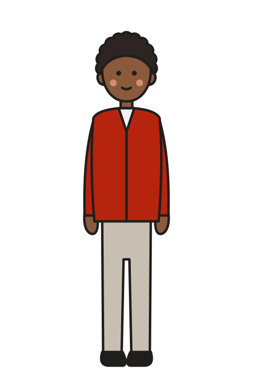
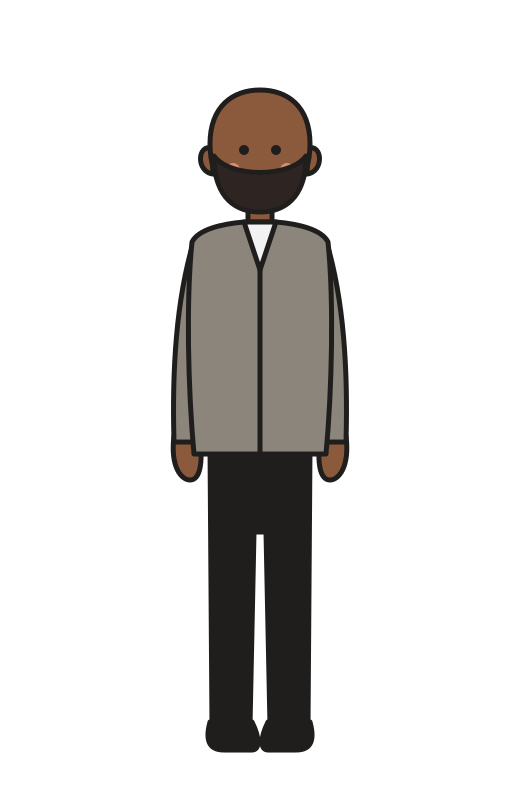
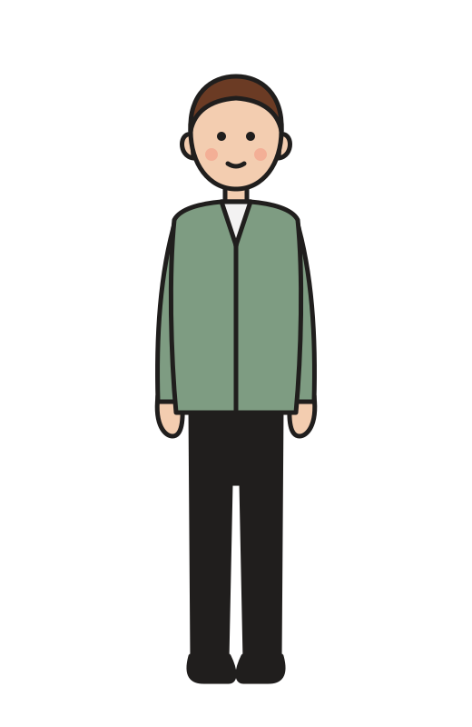

THE OPERATOR’S TOOLKIT · WEDNESDAY 3
How long is your lunch queue really waiting?
Two counts at 12:10 give you the wait, what walks out, and the fix.



STEP 1
Count the queue at 12:10
Every order waiting to order or pay, at exactly ten past twelve. A group paying together is one order.
SITE 10, THE EXAMPLE FROM MONDAY
In the queue at 12:1012
Count on three different days and take the average. One busy Friday isn’t your lunch.
STEP 2
Count what the till serves
From 12:10, count the orders completed at the till for five minutes. Divide by five.
SITE 10
Served from 12:10 to 12:1510
Served a minute (10 ÷ 5)2
Count at the till, not the door. If your till reports orders by the minute, it has already counted for you.
STEP 3
Divide one by the other
The queue, divided by how fast you serve, is how long the last person waits.
12 ÷ 2
= 6 minutes
That’s Little’s Law, proved by John Little in 1961, turned round. It holds while the till is busy and the queue isn’t growing: lunch, in other words.
STEP 4
Price what walks out
Ask whoever is nearest the door to tally the guests who join and leave, or look and walk on.
SITE 10
Walk-aways a day10
× average lunch spend£8.50
× lunch days a week6
Lost a week£510
SITE 10 is £520 a week short of break-even. Its lunch queue is costing it £510.
STEP 5
Work out the speed you need
Pick the longest wait you’d accept as a guest. Divide the queue by it.
SITE 10, TARGET WAIT 4 MINUTES
12 ÷ 43 a minute
Today it serves2 a minute
Not more staff all day. One more serve a minute, between 12:00 and 13:00.
Look first at the person doing two jobs: taking orders and making drinks.
YOUR SITE
Fill it in
AQueue at 12:10orders, average of three days
BServed a minuteorders from 12:10 to 12:15, ÷ 5
CWaitA ÷ Bmin
DWalk-aways a day
ELost a weekD × lunch spend × lunch days£
FTarget waitmin
GServed a minute neededA ÷ F
RUNNING MORE THAN ONE SITE?
Comment QUEUE for the multi-site version.
Every site’s lunch peak side by side: the wait, the speed it needs, what walks out, ranked, with a guide to where the noon queue slows.
Watch Monday’s episode of The Operator’s Ledger, “Little’s Law”, on the WRW Hospitality page.

WRW HOSPITALITY
Wesley Williams
Illustrative figures. Free for use in your own business; not to be resold, rebranded or redistributed.